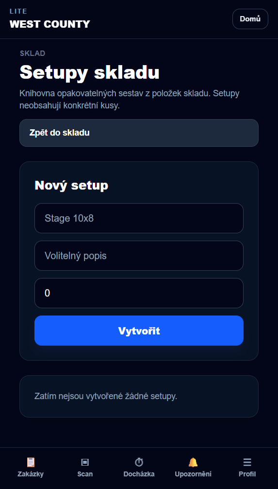
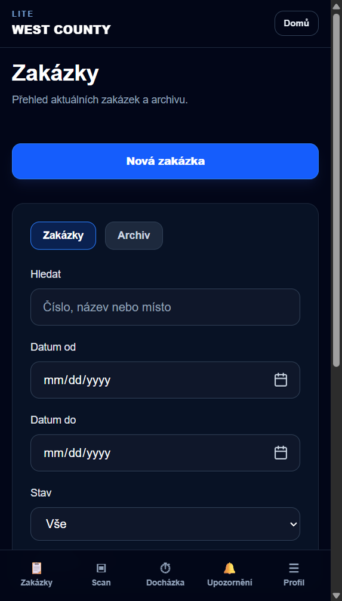
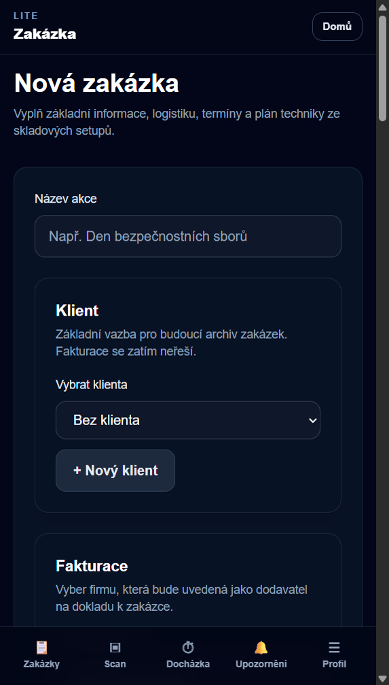
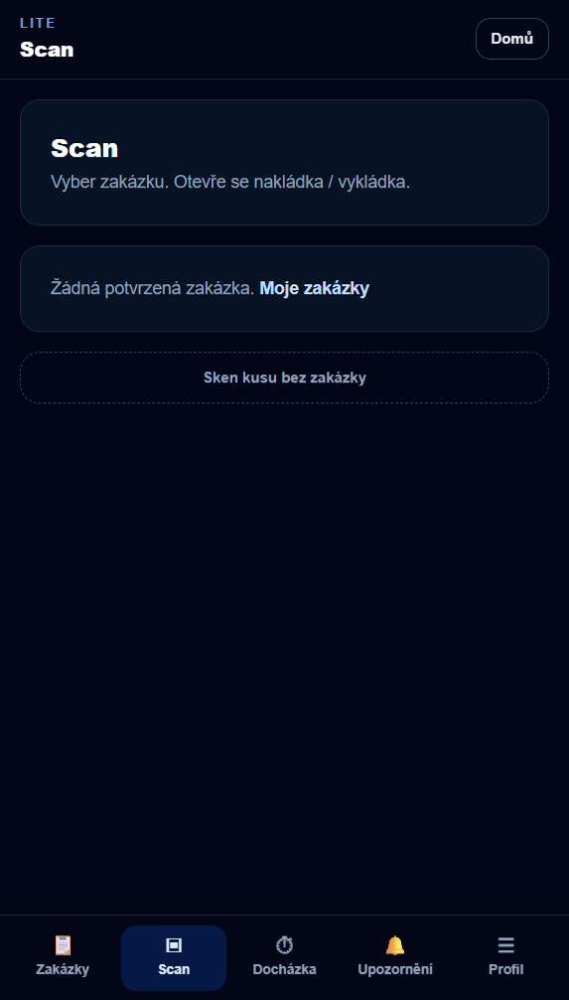
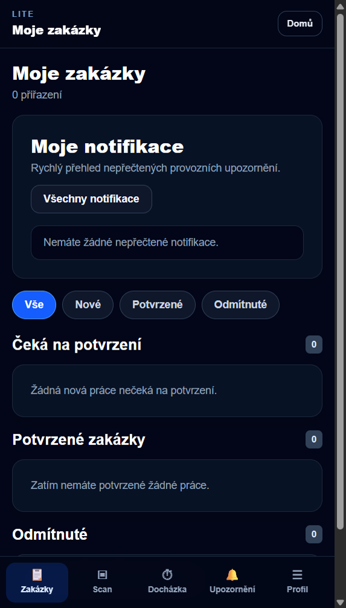
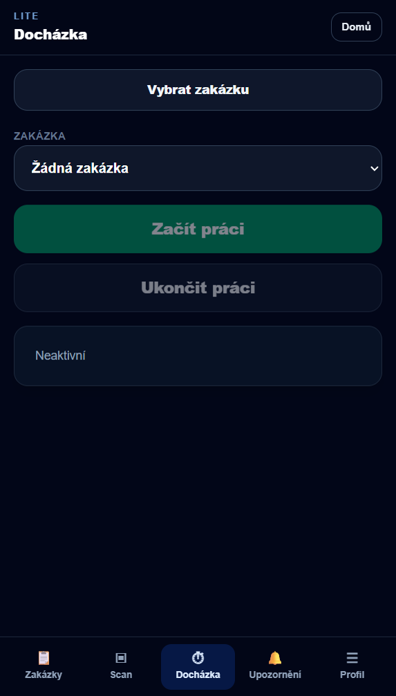

1.Rychlý start
Systém řídí akce od skladu po návrat techniky. Zakázka negeneruje vybavení — jen vybírá hotové balíky ze skladu.
- Založí zakázku
- Vybere setupy + extra
- Přiřadí lidi
- Spravuje sklad a setupy
- Nakládá scanem
- Vrací techniku
- Moje zakázky — přehled práce
- Scan — u vybrané zakázky
- Docházka — začátek / konec práce
- Otevřete aplikaci v prohlížeči (počítač nebo mobil).
- Přihlaste se firemním účtem.
- Na mobilu použijte spodní menu; na počítači horní / boční navigaci.
2.Základní pojmy
Zakázka
- K čemu: jedna akce — místo, termíny, plán techniky, lidé.
- Co tam dělám: zakládám / upravuji akci, sleduji stav.
Setup (skladový balík)
- K čemu: hotová sestava techniky (např. „Stage 6×8“, „P3.9 outdoor 7×4“).
- Kde vzniká: pouze ve skladu → Setupy skladu.
- Na zakázce: jen výběr a počet — žádné skládání po dílech.
Skladová položka
- Typ věci ve skladu (CASE, motor, kabel…).
- Má název, pozici, počet kusů skladem.
Kus
- Konkrétní fyzický kus s vlastním kódem.
- Eviduje se kvůli historii a poškození.
CASE
- Bedna / case jako jedna skladová položka.
- Při nakládce se často skenuje celá CASE, ne každý kabinet zvlášť.
- Uvnitř mohou být kabinety — evidence poškození zůstává na úrovni kusů.
Plán techniky
- Seznam položek a množství pro akci.
- Vzniká z vybraných setupů + extra položek.
- Říká kolik — konkrétní kusy přiřadí až scan.
- Setup — opakovaný balík ze skladu (stage, LED, zvuk…).
- Extra — jednorázový doplněk přímo na zakázce (kabel navíc, adaptér…).
3.Sklad
Sklad je evidence techniky — co máme, kde to leží a v jakém stavu.
- Přehled položek a kusů
- Pozice ve skladu
- Poškození, servis, dostupnost
- Základ pro setupy a zakázky
- Prohlížím položky a kusy
- Kontroluji, zda sedí skutečný stav s systémem
- Nahlašuji poškození
- Připravuji podklady pro setupy (co do balíku patří)
Kam v aplikaci: menu Sklad (přehled, správa, scan skladu dle oprávnění).
4.Setupy
Setup = recept balíku. Obsahuje skladové položky a množství v jednom balíku. Neobsahuje konkrétní kusy.
- Vytvořím setup (název např. „Stage 6×8“)
- Přidám položky a množství (trusy, motory, CASE…)
- Nechám setup aktivní
- Neaktivní setupy se na nové zakázce neukážou
Kam: Sklad → Setupy skladu (/sklad/setupy)

5.Zakázky
Zakázka objednává techniku výběrem setupů. Šéf neskládá stage po dílech.
- Základ — název, místo, klient, termíny
- Setupy ze skladu — zaškrtnutí balíků + počet kusů setupu
- Extra položky — doplnění mimo setupy
- Náhled plánu — kontrola součtu a dostupnosti
- Uložit — vznikne plán techniky na zakázce
Kam: Zakázky → Nová zakázka


- Termíny, místo, poznámky
- Technika — úprava plánu množství
- Scan / nakládka — naložení a vrácení
- Lidé — kdo na akci jede
Pokud ve skladu nejsou aktivní setupy, systém zobrazí prázdný stav a odkaz na Setupy skladu.
6.Scan / nakládka
Scan přiřadí konkrétní kusy (nebo CASE) k zakázce podle plánu techniky.
- Otevřu zakázku → Scan
- Vidím, co má být naloženo
- Skenuji CASE / kusy
- Systém ukáže, co ještě chybí
- Stejná obrazovka scan
- Vracím naskenovaním
- Poškození řeším ve skladu
- Kontroluji plán vs. skutečně naložené
- Skenuji čárové kódy na bednách a kusích
- Nepřeskakuji položky z plánu bez důvodu

7.Mobilní režim
Na telefonu je zjednodušené menu dole. Vhodné pro skladníka a technika v terénu.
| Ikona | K čemu |
|---|---|
| Zakázky | Přehled / Moje zakázky, nová zakázka (šéf) |
| Scan | Nakládka u aktivní nebo vybrané zakázky |
| Docházka | Začátek a konec práce na zakázce |
| Upozornění | Provozní zprávy ze systému |
| Profil | Účet a rychlé odkazy |
- Po otevření zakázky: přepínání Detail → Scan → Docházka
- Systém si pamatuje poslední zakázku pro rychlý scan

8.Docházka
Evidence práce na akci — kdy začínám a končím, u které zakázky.
- K čemu: přehled hodin, podklad pro proplacení
- Kde: záložka Docházka (mobil) nebo Moje u zakázky
- Postup: vyberu zakázku → Začít práci → po akci Ukončit práci

- Menu Upozornění — změny zakázek, sklad, schválení
- Nepřečtené jsou zvýrazněné
- Kontrolujte před odjezdem na akci
9.Typický workflow firmy
Jeden den akce od přípravy ve skladu po návrat.
Příprava (sklad + kancelář)
- Sklad: setupy sedí s realitou, položky aktivní
- Šéf: nová zakázka, výběr setupů a extra, uložení plánu
- Skladník: scan nakládky podle plánu (CASE a kusy)
Akce (terén)
- Technik: Moje zakázky, potvrzení účasti
- Docházka: začátek práce
- Realizace akce
Návrat
- Scan vrácení techniky
- Poškození → evidence ve skladu
- Docházka: ukončení práce
- Šéf / admin: uzavření zakázky, fakturace dle oprávnění
| Role | Hlavně používá |
|---|---|
| Skladník | Sklad, setupy, scan nakládka / návrat |
| Šéf / koordinátor | Nová zakázka, lidé, technika, upozornění |
| Technik | Moje zakázky, scan, docházka (mobil) |